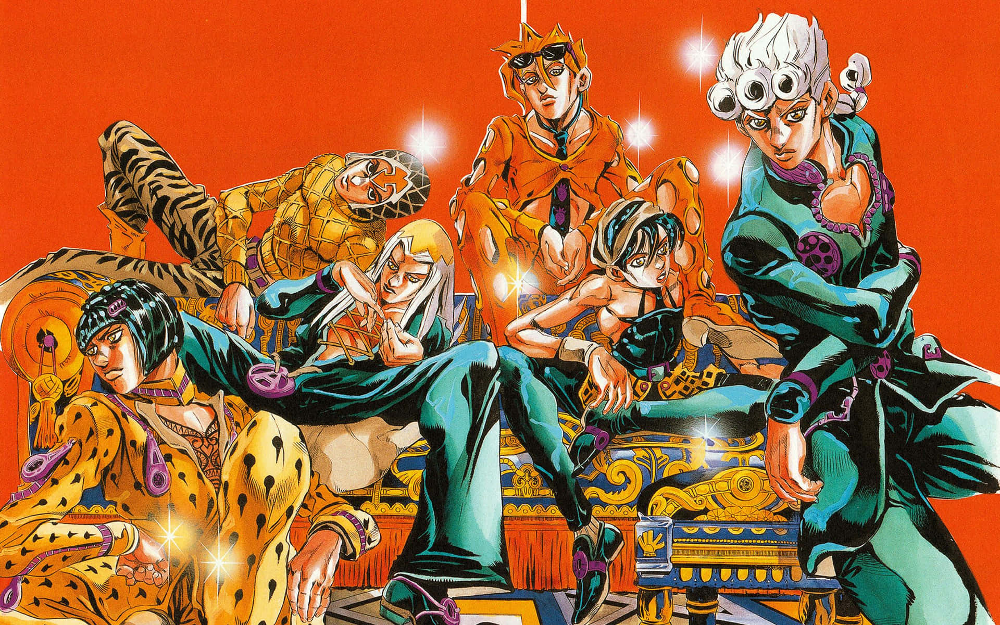

About Our Project
For our project, we explored the manga series JoJo's Bizarre Adventure: Golden Wind. Our goal was to to graphic narrative. We encoded 9 total chapters into TEI (Text Encoding Initiative) using the CBML (Comic Book Markup Language) framework. This allows for deep structural analysis and various visualizations using XSLT to transform our XML data into the HTML pages you see here.
About JoJo's Bizzare Adventure
JoJo's Bizarre Adventure: Golden Wind is a supernatural action manga and the fifth story arc in Hirohiko Araki's long-running saga. The chapters we covered follow Giorno Giovanna, a teenager in Naples who dreams of rising to the top of the Italian mafia, Passione, to stop the drug trade corrupting his city. Unlike typical gangsters, Giorno is driven by a strong sense of justice, which leads him to cross paths with the high-ranking mobster Bruno Bucciarati. After an intense confrontation involving their Stands—physical manifestations of their psychic energy—the two realize they share the same goal. The story follows Giorno as he joins Bucciarati's squad, working to overthrow the organization's mysterious boss from the inside and achieve his dream of becoming a "Gang-Star."
The Team
Micaiah
Hey, my name is Micaiah and I am a sophomore! This project was interesting to me because I've never read magna before, or even watched an anime series. This one specifcally just happen to stand out to me, and I liked the team. Learning CBML and reading the magna was fun, and I learned a lot about the series as well as text encoding. Overall, I had a lot of fun with this project!
=======Micaiah Ross
Hey, my name is Micaiah and I am a sophomore! This project was interesting to me because I've never read magna before, or even watched an anime series. This one specifcally just happen to stand out to me, and I liked the team. Learning CBML and reading the magna was fun, and I learned a lot about the series as well as text encoding. Overall, I had a lot of fun with this project!
>>>>>>> 149177b4867ec1e9b65b15f5eabe940a3ae2c1d8Brady
Hi everyone, my name is Brady, and I am a sophomore! I absolutely adored this project and how we constructed the design and code for this. This was my first time heavily coding for a project of this size. Going into the project now, I’m passionate about anime and drawing manga panels in my own art style. And anime and its animation (depending on what anime) inspires a lot of my design and passion to draw, so I was on board for this project from the start. Learning how to encode the panels and have specific words stand out was very interesting to me when coding this for our project. One of the big things I really wanted to do was add imaging and enlargening images to better see them. I figure out how to do this and added more designs elements to it to make it pop more.My teammates and just the team in general were so much fun. I had a great time designing our site and working together.
Gavin
Hello, My name is Gavin Redding I am a junior at Penn State Behrend. I chose this project for this semester because we were given the ability to make our own project idea and I thought it would be fun to use my favorite series for this project and wanted to see how it would go. I wanted to see what it would be like to transcript this manga using CBML and seeing what we could learn about Araki's writing for this project and to get a further since of the coding we would have done this semester.
Methodology
- Source Material: Diavolo Emerges Parts 1-5, King of Kings, Gold Experience Requiem Parts 1-4.
- Schema: CBML for manga-specific semantics.
- Transformation: Custom XSLT sheets for responsive web output.